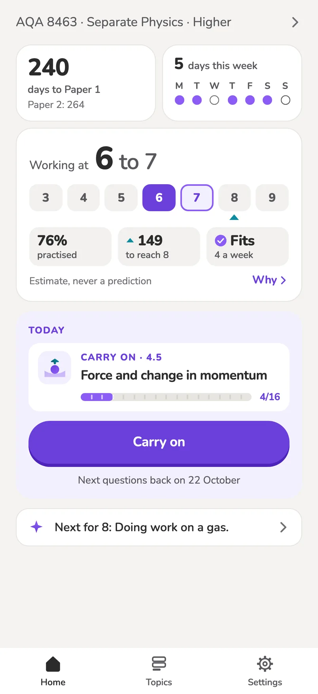
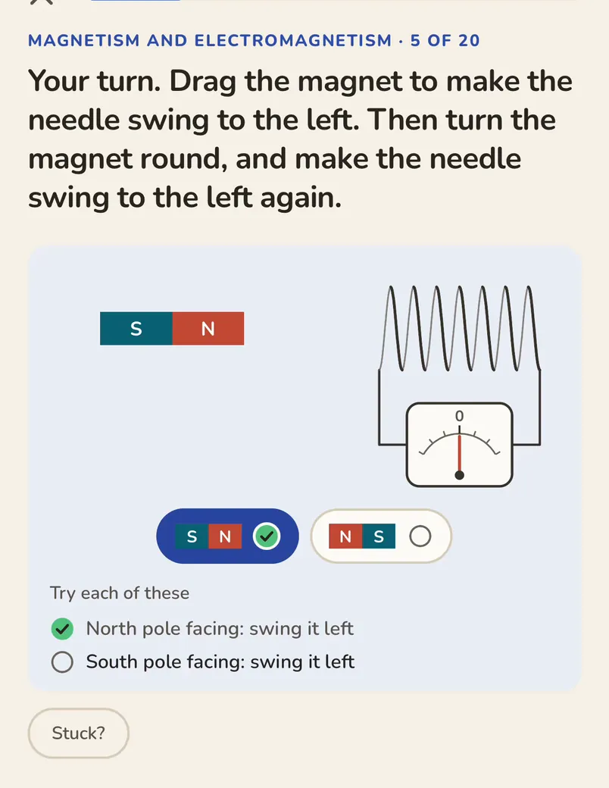
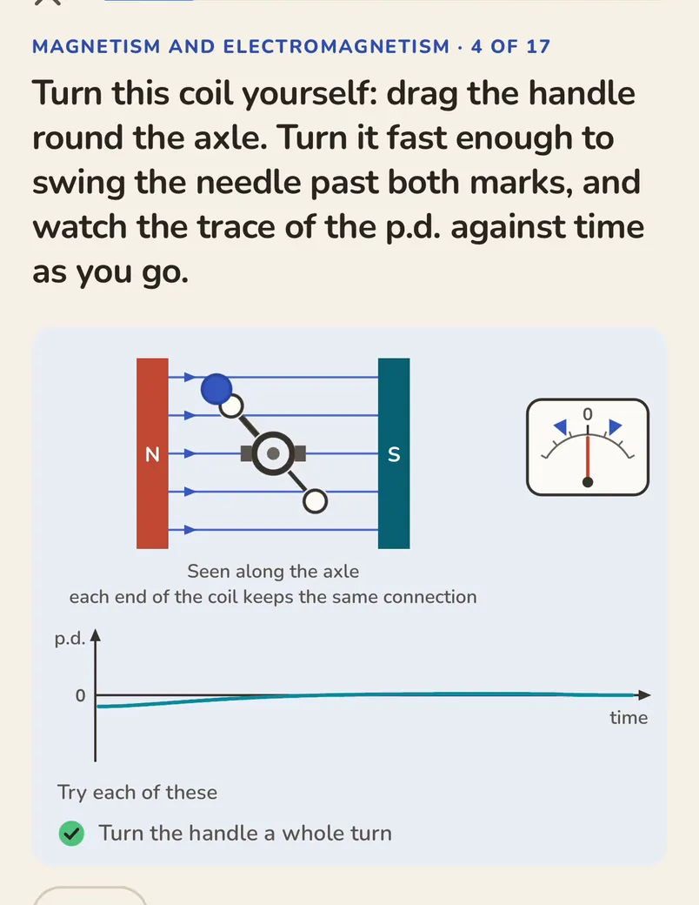
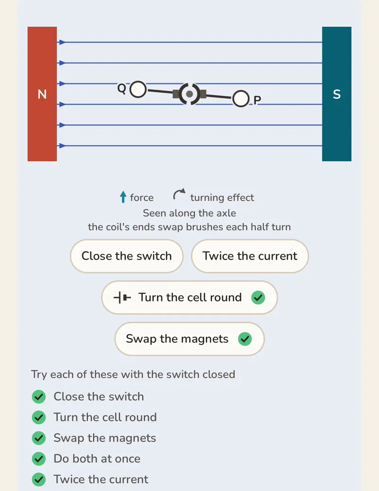
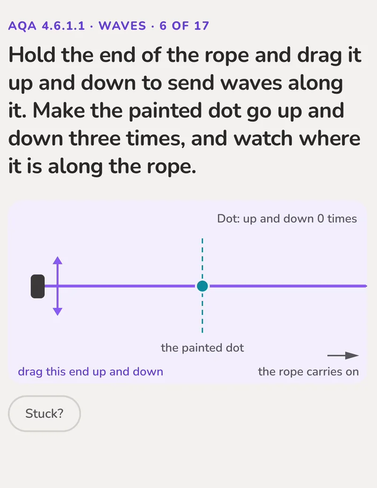
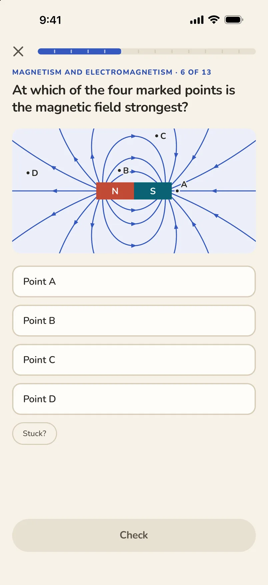
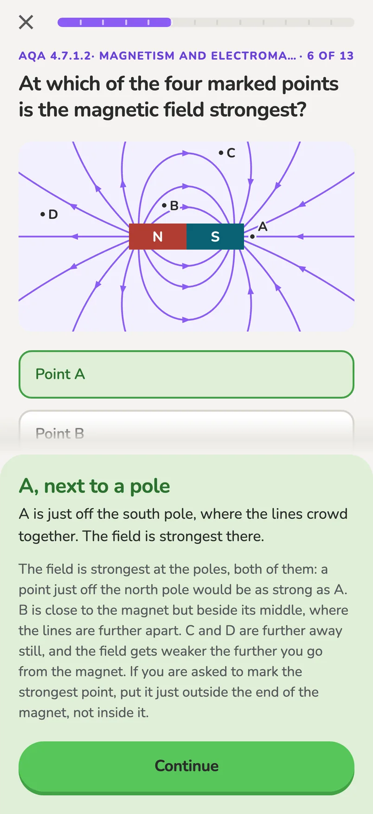
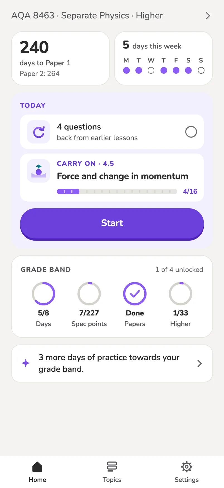
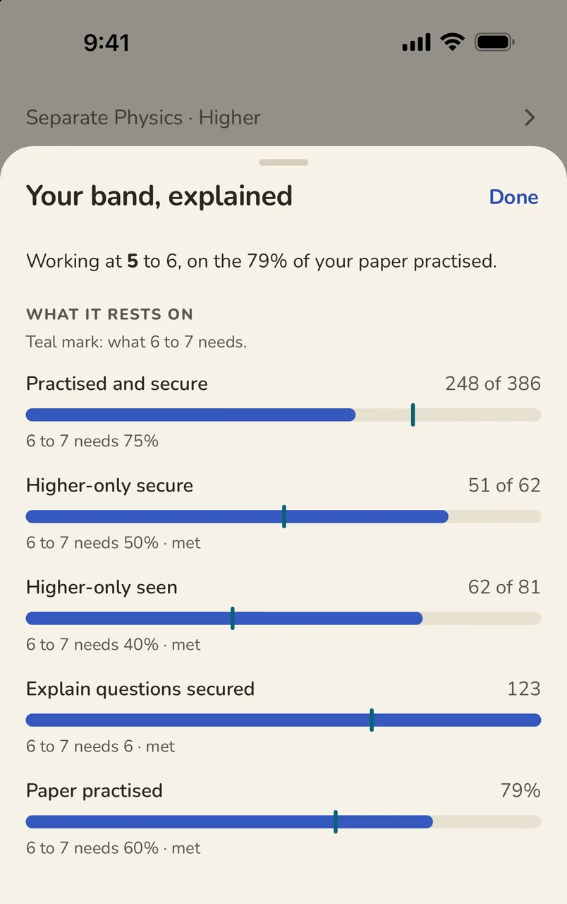
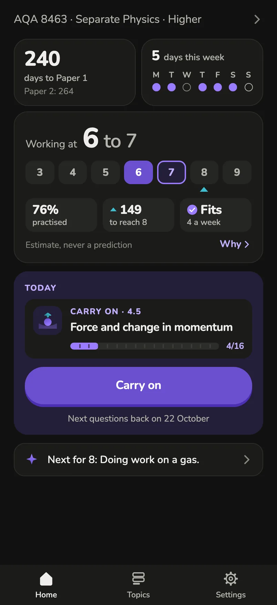

GCSE Physics revision app
Physics revision that shows you why.
Short interactive lessons written for your exam board, your course and your tier. Answer, see why, and meet the question again before it fades.
Developed by a fully qualified GCSE and A Level Physics Teacher. Every question is matched to your own board’s specification, and every lesson is checked and approved by the teacher before it ships.
For AQA, Edexcel, OCR A and OCR B. Separate and combined science. Foundation and Higher.

Drawings you can move
Drawings worked out from the physics
Field lines, circuits, forces and waves are drawn from the physics itself, so an arrow twice as long means twice the force. Some you drive yourself, with your finger. Each clip below is the app, in your hands.
-

Magnet into a coilYou drag the magnet in and out. The needle swings one way, then the other, and twice as far with twice the turns. -

GeneratorYou turn the handle. The needle and the trace follow your hand: turn faster and the peaks grow taller and closer together. -

MotorYou close the switch, turn the cell round or swap the magnets. The coil slows, stops and turns the other way. -

Making a waveYou shake the end of a rope up and down. The wave you make runs along it at the rope’s own speed.
The clips loop on their own. If your phone is set to reduce motion, you see a still instead.
How a lesson works
Answer. See why. Come back.
-
Answer a question
Tap, type or drag. Many questions come with a drawing worked out from the physics.

-
See why
You find out straight away if you were right, and a Why? explains the physics behind the answer, right or wrong.

-
Come back to it
Questions from earlier lessons return on later days, before they fade. Get one wrong and it is back tomorrow. Get it right and it comes back at longer gaps until it is secure.

The grade band
An estimate, never a prediction
Once you have practised enough, Home shows the grades you are working at, from your own answers. It tells you what the band rests on and what would move it up. Until then it says so, rather than guessing.

What it counts
Your exam board publishes a list of the things you must be able to do. Every question in Upthrust, apart from the warm-ups, proves one or more lines on that list. Each time you answer, the app notes the line, the date, and whether you were right, partly right or wrong. A line becomes secure once you have got it right on two different days, at least three days apart, on a different question where there is one. Your own “Got it” tick is kept but never counted as evidence; a “Not yet” only brings the question back sooner.
How the band is worked out
Three plain fractions build it: how many of the lines you have practised are secure; on Higher, how many of the Higher-only lines are secure, because that is where 7 to 9 lives; and how many lines you have secured through a question that asked you to explain, give a reason or spot a mistake, not only recall or calculate. Beside them sits how much of your paper you have practised. The band is the highest rung on the ladder where you meet every one of those. It is two grades wide, lower grade first: 6 to 7 means you have shown a 6, and a 7 is in reach.
Before there is enough to go on
No band appears until you have practised about two fifths of your paper, spread across it rather than one topic alone, on at least eight different days. Until then Home shows plain counts: how many lines you have shown, and how many are secure. Between two fifths and three fifths practised the band is three grades wide, and says it is not yet an estimate.
What moves it up or down
Only your answers. It rises as more lines become secure across more of your paper. It falls when a secure line is got wrong, which makes it shaky again, and a line you have not answered right for eight weeks starts to fade, so the app brings it back before then. The countdown to your exam, your target grade and the minutes you spend never move it.
Why an estimate, never a prediction
Your exam is two papers on two days, with questions nobody has seen, written under time. Upthrust cannot see that. It cannot see the hands-on part of your practicals, the topics it has not built yet, or, on Combined Science, your biology and chemistry. So beside every band it shows the share of your paper the band rests on, and lists what it cannot see. It never says “predicted”, “on track” or “you will get”.
Your own course
Set once, in your board's own words
Choose your board, course and tier the first time you open the app. Every lesson, keyword and practical name is then the one your own exam uses.
- Board
- AQA
- Edexcel
- OCR A
- OCR B
- Course
- Separate science
- Combined science
- Tier
- Foundation
- Higher
Upthrust is independent and is not endorsed by any exam board.
What else it does
The rest, in one look
Instant feedback
Know straight away if you were right, with the reason explained.
Spaced practice
Questions from earlier lessons come back on later days.
Your exam dates
Counts down to your physics papers, and you can set your own dates.
Paper by paper
Topics are grouped by your exam papers, with the days to each.
No account
Open it and start. There is nothing to sign up for.
Stays on your phone
Your answers never leave it. No adverts, no tracking.
Light or dark
Follows your phone
Or choose light or dark in Settings.

Which exam boards does it cover?
AQA, Edexcel, OCR A (Gateway) and OCR B (Twenty First Century), for GCSE Physics and the physics in combined science, Foundation and Higher.
Do I need an account?
No. There is nothing to sign up for, and no email address is asked for.
What does it know about me?
Only what you tell it on your own phone: your board, course and tier, and your answers. None of it leaves the phone. Read the privacy policy.
Is the grade band a prediction?
No. It is an estimate from your practice so far. It says what it rests on, and it only appears once there is enough practice to base it on.
When can I get it?
It is coming to iPhone and Android. There is no date yet.
Who makes it?
A fully qualified GCSE and A Level Physics Teacher. Every question is matched to your own board’s specification, and every lesson is checked and approved by the teacher before it ships.
Developed by a physics teacher, for students in England.